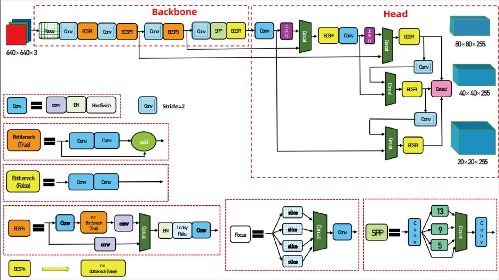
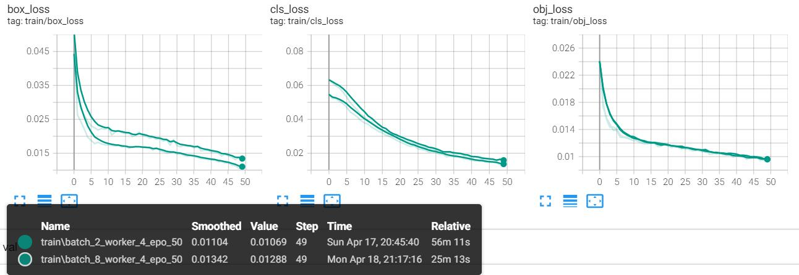

Introduction
The rapid development of deep learning and computer vision technologies has opened up new possibilities for improving communication between deaf-mute individuals and the general public. Despite the increasing availability of facilities designed for people with disabilities, the fundamental issue of effective communication for the deaf-mute community remains unresolved. This project addresses this critical gap by developing a real-time sign language recognition system using deep learning techniques.
Traditional methods for sign language recognition often rely on expensive, cumbersome equipment or are limited by the availability of large, high-quality datasets. Additionally, these methods struggle with real-time performance and the accurate recognition of complex, continuous sign language sequences. This project seeks to overcome these limitations by leveraging the YOLOv5 algorithm, which is known for its balance between detection speed and accuracy.
- Innovative Data Handling: The project introduces an optimized approach to data collection and augmentation, categorizing datasets into basic, enhanced, complex, and custom types. This approach not only reduces the volume of data required but also improves recognition accuracy and robustness.
- Model Optimization and Lightweight Design: To achieve real-time detection, the project employs knowledge distillation to compress large models, ensuring high accuracy while making the model more lightweight. Additionally, the incorporation of the SE attention mechanism and a weighted bidirectional pyramid network enhances the model's ability to detect small objects, further improving its effectiveness in real-world applications.
Detailed Information

The sign language recognition system is implemented through a series of well-defined modules, each contributing to the overall performance and accuracy of the model. Below is a breakdown of the system's core modules and their respective functionalities.
- Input Module: The input module is responsible for preparing the data for processing. It includes techniques like Mosaic data augmentation, which combines four images into one, enhancing the diversity of the training data. Additionally, adaptive image scaling and anchor box calculation are employed to ensure that the input data is compatible with the model's architecture.
- Backbone Module: The backbone of the model, based on the YOLOv5 architecture, includes key components such as the Focus module, which slices the input image into four pieces to retain crucial spatial information while reducing the computational load. This module is crucial for initial feature extraction, providing a solid foundation for subsequent layers.
- Neck Module: The Neck module integrates FPN (Feature Pyramid Network) and PAN (Path Aggregation Network) structures to fuse semantic features from different layers. This combination helps the model detect objects of various sizes by ensuring that features are well-represented across different scales, enhancing the accuracy of small object detection, which is particularly important in sign language recognition.
- Head Module: The Head module outputs the final predictions, including the class probabilities and bounding box coordinates. The module is equipped with multiple detection layers to handle objects of different scales, ensuring that each sign language gesture is accurately recognized regardless of its size within the frame. The loss function, based on CIoU (Complete IoU), ensures that the model effectively handles bounding box regression with a focus on both overlap and distance between predicted and ground truth boxes.
Project Achievements

The project aimed to develop a sign language recognition system that leverages deep learning techniques to facilitate communication for the deaf and mute community. By employing the YOLOv5 algorithm and incorporating several advanced techniques, the project successfully achieved significant results that address both accuracy and efficiency in real-time sign language detection.
The key outcomes of this project are as follows:
- High Accuracy and Efficiency: The system demonstrates a high level of accuracy in recognizing 38 types of sign language gestures, even in real-time settings. The use of optimized YOLOv5s, combined with data augmentation techniques like Mosaic and SE attention mechanisms, ensures that the system performs well in diverse environments with varying levels of complexity.
- Lightweight Model Design: By applying knowledge distillation and other optimization techniques, the project successfully reduced the model's size without compromising its performance. This lightweight design is crucial for deploying the system on devices with limited computational resources, making it accessible for broader use cases, including mobile and IoT devices.
- Scalability and Adaptability: The system's modular design allows for easy adaptation to different languages and environments. The ability to integrate additional datasets or adjust the model for new sign languages enhances the system's scalability, ensuring it can be used in various applications beyond its initial scope.
- Real-World Applicability: The project's results highlight its potential for real-world deployment, offering a practical tool for improving communication between the deaf-mute community and the general public. The system's accuracy and efficiency in recognizing sign language gestures can significantly enhance the quality of life for its users.